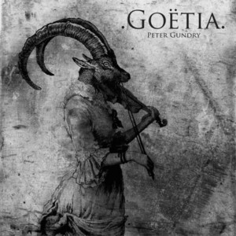
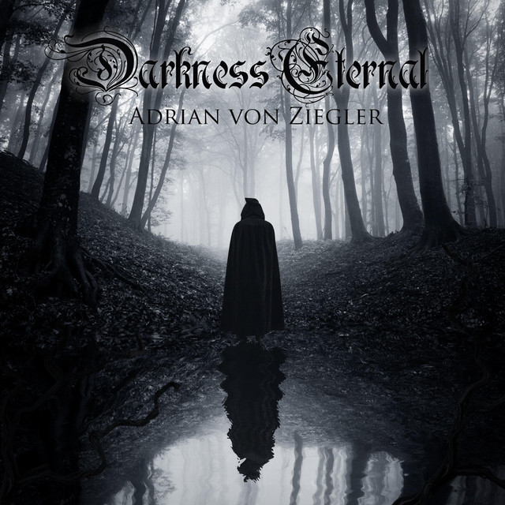
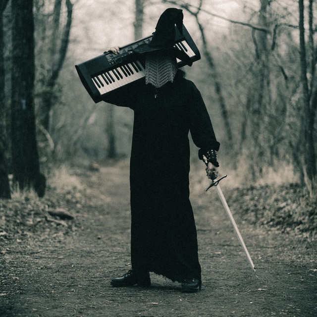

Magical Melodies for Work
|  |
.Goëtia.Author: Peter GundryGoetia es una obra musical que evoca misterio, magia y oscuridad a través de composiciones atmosféricas y melódicas inspiradas en la naturaleza y el ocultismo. Escuchar |
|  |
Darkness EternalAuthor: Adrian Von ZieglerDarkness Eternal es un álbum que sumerge al oyente en paisajes sonoros oscuros y emotivos, fusionando elementos de la música celta, medieval y fantástica para crear una experiencia auditiva inmersiva y evocadora. Escuchar |
|  |
DuskwoodAuthor: VaelastraszDuskwood es una obra que transporta a los oyentes a un mundo de fantasía sombrío y envolvente, combinando melodías atmosféricas y elementos de música épica para crear una experiencia auditiva que evoca misterio y aventura en un bosque en penumbra. Escuchar |